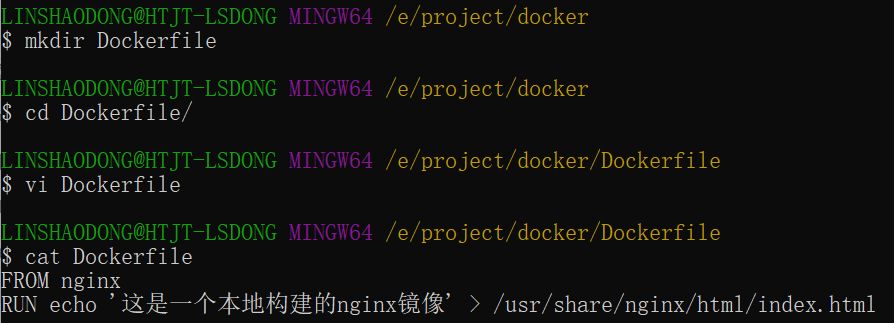
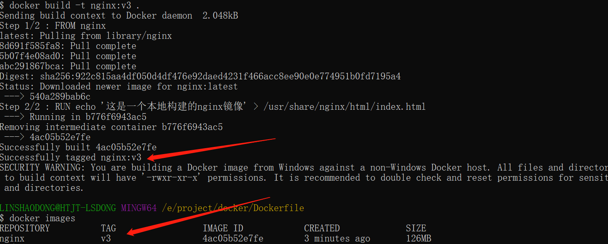

Docker Dockerfile
¿Qué es Dockerfile?
Dockerfile es un archivo de texto que contiene todas las instrucciones para construir una imagen de Docker.
Dockerfile es un archivo de texto que se utiliza para construir imágenes; su contenido incluye las instrucciones y explicaciones necesarias para construir una imagen.
Al definir una serie de comandos y parámetros, Dockerfile guía a Docker para construir una imagen personalizada.
Usar Dockerfile para personalizar imágenes
Aquí solo se explica cómo ejecutar el archivo Dockerfile para personalizar una imagen. Los detalles sobre las instrucciones dentro del archivo Dockerfile se presentarán en la siguiente sección. Aquí solo necesitas conocer el proceso de construcción.
1. A continuación, tomemos como ejemplo la personalización de una imagen de nginx (la imagen construida tendrá un archivo /usr/share/nginx/html/index.html)
En un directorio vacío, cree un nuevo archivo llamado Dockerfile y agregue el siguiente contenido:
FROM nginx RUN echo '这是一个本地构建的nginx镜像' > /usr/share/nginx/html/index.html

2. La función de las instrucciones FROM y RUN
FROM: Las imágenes personalizadas se basan en la imagen FROM; aquí nginx es la imagen base necesaria para la personalización. Las operaciones posteriores se basan en nginx.
RUN: Se utiliza para ejecutar el comando de línea de comandos que le sigue. Tiene los siguientes dos formatos:
Formato shell:
RUN <命令行命令> # <命令行命令> 等同于，在终端操作的 shell 命令。
Formato exec:
RUN ["可执行文件", "参数1", "参数2"] # 例如： # RUN ["./test.php", "dev", "offline"] 等价于 RUN ./test.php dev offline
Nota: Cada vez que se ejecuta una instrucción de Dockerfile, se crea una nueva capa en Docker. Por lo tanto, demasiadas capas innecesarias pueden hacer que la imagen se vuelva demasiado grande. Por ejemplo:
RUN yum -y install wget
RUN wget -O redis.tar.gz "http://download.redis.io/releases/redis-5.0.3.tar.gz"
RUN tar -xvf redis.tar.gz
La ejecución anterior creará 3 capas de imagen. Se puede simplificar al siguiente formato:
RUN yum -y install wget \
&& wget -O redis.tar.gz "http://download.redis.io/releases/redis-5.0.3.tar.gz" \
&& tar -xvf redis.tar.gz
Como arriba, usando&&el símbolo para conectar comandos; así, después de la ejecución, solo se creará 1 capa de imagen.
Comenzar a construir la imagen
En el directorio donde se encuentra el archivo Dockerfile, ejecute la acción de construcción.
El siguiente ejemplo construye una imagen nginx:v3 (nombre de imagen: etiqueta de imagen) mediante el Dockerfile en el directorio.
注: El último.representa la ruta de contexto de esta ejecución; se explicará en la siguiente sección.

Lo anterior muestra que la construcción se ha realizado correctamente.
Ruta de contexto
En la sección anterior, se mencionó que el último argumento.es la ruta de contexto; entonces, ¿qué es la ruta de contexto?
La ruta de contexto se refiere a que, al construir la imagen, a veces Docker necesita usar archivos de la máquina local (por ejemplo, para copiar). Cuando el comando docker build conoce esta ruta, empaqueta todo el contenido bajo esa ruta.
Análisis: Debido a que el modo de ejecución de Docker es C/S (Cliente/Servidor). Nuestra máquina local es el C (cliente), y el motor de Docker es el S (servidor). El proceso de construcción real se completa en el motor de Docker, por lo que en este momento no se pueden usar los archivos de nuestra máquina local. Por lo tanto, es necesario empaquetar los archivos del directorio especificado de nuestra máquina local y proporcionarlos al motor de Docker para su uso.
Si no se especifica el último parámetro, la ruta de contexto predeterminada es la ubicación del Dockerfile.
Nota: No coloque archivos innecesarios en la ruta de contexto, porque se empaquetarán y enviarán juntos al motor de Docker; si hay demasiados archivos, el proceso será lento.
Explicación detallada de instrucciones
| Instrucciones de Dockerfile | Descripción |
|---|---|
| FROM | Especifica la imagen base para la construcción de instrucciones posteriores. |
| MAINTAINER | Especifica el autor/mantenedor del Dockerfile. (Obsoleto, se recomienda usar la instrucción LABEL) |
| LABEL | Agrega metadatos a la imagen, en forma de pares clave-valor. |
| RUN | Ejecuta comandos en la imagen durante el proceso de construcción. |
| CMD | Especifica el comando predeterminado en la creación del contenedor. (Puede ser sobrescrito) |
| ENTRYPOINT | Establece el comando principal en la creación del contenedor. (No puede ser sobrescrito) |
| EXPOSE | Declara puertos de red específicos que el contenedor escucha en tiempo de ejecución. |
| ENV | Establece variables de entorno dentro del contenedor. |
| ADD | Copia archivos, directorios o URLs remotas a la imagen. |
| COPY | Copia archivos o directorios a la imagen. |
| VOLUME | Crea un punto de montaje o declara un volumen para el contenedor. |
| WORKDIR | Establece el directorio de trabajo para las instrucciones posteriores. |
| USER | Especifica el contexto de usuario para las instrucciones posteriores. |
| ARG | Define variables que se pasan al constructor durante el proceso de construcción; se pueden establecer con el comando "docker build". |
| ONBUILD | Agrega disparadores cuando esta imagen se usa como base para otro proceso de construcción. |
| STOPSIGNAL | Establece la señal de llamada al sistema que se envía al contenedor para salir. |
| HEALTHCHECK | Define un comando para verificar periódicamente el estado de salud del contenedor. |
| SHELL | Sobrescribe el shell predeterminado en Docker para las instrucciones RUN, CMD y ENTRYPOINT. |
COPY
Instrucción de copia: copia archivos o directorios desde el directorio de contexto a la ruta especificada en el contenedor.
Formato:
COPY [--chown=<user>:<group>] <源路径1>... <目标路径> COPY [--chown=<user>:<group>] ["<源路径1>",... "<目标路径>"]
[--chown=<user>:<group>]: Parámetro opcional, se utiliza para cambiar el propietario y el grupo de los archivos copiados al contenedor.
<ruta de origen>: Archivo o directorio de origen; aquí se puede utilizar una expresión comodín, cuyas reglas de comodín deben cumplir con la regla filepath.Match de Go. Por ejemplo:
COPY hom* /mydir/ COPY hom?.txt /mydir/
<ruta de destino>: Ruta especificada dentro del contenedor; no es necesario crearla de antemano. Si la ruta no existe, se creará automáticamente.
ADD
La instrucción ADD y COPY tienen un formato de uso similar (para la misma necesidad, la recomendación oficial es usar COPY). Sus funciones también son similares, con las siguientes diferencias:
- Ventaja de ADD: si el <archivo de origen> es un archivo comprimido tar, con formatos de compresión gzip, bzip2 o xz, se copiará y descomprimirá automáticamente en <ruta de destino>.
- Desventaja de ADD: sin descompresión previa, no se puede copiar un archivo comprimido tar. Esto invalidará la caché de construcción de la imagen, lo que puede hacer que la construcción de la imagen sea relativamente lenta. Se puede decidir si usarlo según se necesite descompresión automática o no.
CMD
Similar a la instrucción RUN, se utiliza para ejecutar programas, pero los momentos de ejecución de ambos son diferentes:
- CMD se ejecuta durante docker run.
- RUN se ejecuta durante docker build.
Función: Especifica el programa que se ejecutará por defecto en el contenedor iniciado; cuando el programa termina, el contenedor también termina. El programa especificado por la instrucción CMD puede ser sobrescrito por el programa especificado en los parámetros de línea de comandos de docker run.
Nota: Si en el Dockerfile hay varias instrucciones CMD, solo la última tiene efecto.
Formato:
CMD <shell 命令> CMD ["<可执行文件或命令>","<param1>","<param2>",...] CMD ["<param1>","<param2>",...] # 该写法是为 ENTRYPOINT 指令指定的程序提供默认参数
Se recomienda usar el segundo formato, ya que el proceso de ejecución es más claro. De hecho, el primer formato se convierte automáticamente al segundo formato durante la ejecución, y el archivo ejecutable predeterminado es sh.
ENTRYPOINT
Similar a la instrucción CMD, pero no será sobrescrita por las instrucciones especificadas en los parámetros de línea de comandos de docker run; además, esos parámetros de línea de comandos se pasarán como argumentos al programa especificado por la instrucción ENTRYPOINT.
Sin embargo, si al ejecutar docker run se utiliza la opción --entrypoint, sobrescribirá el programa especificado por la instrucción ENTRYPOINT.
Ventaja: Al ejecutar docker run, se pueden especificar los parámetros necesarios para que ENTRYPOINT se ejecute.
Nota: Si en el Dockerfile hay varias instrucciones ENTRYPOINT, solo la última tiene efecto.
Formato:
ENTRYPOINT ["<executeable>","<param1>","<param2>",...]
Se puede usar junto con el comando CMD: generalmente CMD se usa cuando hay argumentos variables; aquí CMD equivale a pasar argumentos a ENTRYPOINT, como se mencionará en el siguiente ejemplo.
Ejemplo:
Supongamos que ya se ha construido la imagen nginx:test mediante un Dockerfile:
FROM nginx ENTRYPOINT ["nginx", "-c"] # 定参 CMD ["/etc/nginx/nginx.conf"] # 变参
1. Ejecutar sin pasar argumentos
$ docker run nginx:test
En el contenedor se ejecutará por defecto el siguiente comando, iniciando el proceso principal.
nginx -c /etc/nginx/nginx.conf
2. Ejecutar pasando argumentos
$ docker run nginx:test -c /etc/nginx/new.conf
En el contenedor se ejecutará por defecto el siguiente comando para iniciar el proceso principal (/etc/nginx/new.conf: suponiendo que este archivo ya existe en el contenedor).
nginx -c /etc/nginx/new.conf
ENV
Establece variables de entorno. Una vez definida la variable de entorno, se puede usar en las instrucciones posteriores.
Formato:
ENV <key> <value> ENV <key1>=<value1> <key2>=<value2>...
El siguiente ejemplo establece NODE_VERSION = 7.2.0; en las instrucciones posteriores se puede hacer referencia a ella mediante $NODE_VERSION:
ENV NODE_VERSION 7.2.0 RUN curl -SLO "https://nodejs.org/dist/v$NODE_VERSION/node-v$NODE_VERSION-linux-x64.tar.xz" \ && curl -SLO "https://nodejs.org/dist/v$NODE_VERSION/SHASUMS256.txt.asc"
ARG
Parámetro de construcción, con el mismo efecto que ENV. Sin embargo, el alcance es diferente. Las variables de entorno establecidas por ARG solo son válidas dentro del Dockerfile, es decir, solo son válidas durante el proceso de docker build; esta variable de entorno no existe en la imagen construida.
En el comando de construcción docker build se puede sobrescribir con --build-arg <nombre de parámetro>=<valor>.
Formato:
ARG <参数名>[=<默认值>]
VOLUME
Define un volumen de datos anónimo. Si al iniciar el contenedor se olvida montar el volumen de datos, se montará automáticamente en un volumen anónimo.
Función:
- Evitar que los datos importantes se pierdan debido al reinicio del contenedor, lo cual es muy grave.
- Evitar que el contenedor siga creciendo.
Formato:
VOLUME ["<路径1>", "<路径2>"...] VOLUME <路径>
Al iniciar el contenedor con docker run, podemos modificar el punto de montaje mediante el parámetro -v.
EXPOSE
Simplemente declara el puerto.
Función:
- Ayuda a los usuarios de la imagen a comprender el puerto del servicio de esta imagen, para facilitar la configuración de la asignación de puertos.
- Al usar la asignación de puertos aleatoria en tiempo de ejecución, es decir, con docker run -P, los puertos EXPOSE se asignarán automáticamente a puertos aleatorios.
Formato:
EXPOSE <端口1> [<端口2>...]
WORKDIR
Especifica el directorio de trabajo. El directorio de trabajo especificado con WORKDIR existirá en cada capa de la construcción de la imagen. A partir de entonces, el directorio actual de cada capa se cambiará al directorio especificado; si el directorio no existe, WORKDIR lo creará por ti.
Durante el proceso de construcción de la imagen con docker build, cada comando RUN crea una nueva capa. Solo los directorios creados mediante WORKDIR persistirán.
Formato:
WORKDIR <工作目录路径>
USER
Se utiliza para especificar el usuario y el grupo de usuarios que ejecutarán los comandos posteriores; aquí solo se cambia el usuario para la ejecución de los comandos posteriores (el usuario y el grupo de usuarios deben existir previamente).
Formato:
USER <用户名>[:<用户组>]
HEALTHCHECK
Se utiliza para especificar un programa o instrucción que supervise el estado de ejecución del servicio del contenedor Docker.
Formato:
HEALTHCHECK [选项] CMD <命令>：设置检查容器健康状况的命令 HEALTHCHECK NONE：如果基础镜像有健康检查指令，使用这行可以屏蔽掉其健康检查指令 HEALTHCHECK [选项] CMD <命令> : 这边 CMD 后面跟随的命令使用，可以参考 CMD 的用法。
ONBUILD
Se utiliza para retrasar la ejecución de comandos de construcción. En pocas palabras, los comandos especificados con ONBUILD en el Dockerfile no se ejecutarán durante el proceso de construcción actual de la imagen (supongamos que la imagen es test-build). Cuando un nuevo Dockerfile utiliza la imagen construida previamente con FROM test-build, al ejecutar la construcción del Dockerfile de la nueva imagen, se ejecutarán los comandos especificados con ONBUILD en el Dockerfile de test-build.
Formato:
ONBUILD <其它指令>
LABEL
La instrucción LABEL se utiliza para agregar metadatos a la imagen, en forma de pares clave-valor. El formato de sintaxis es el siguiente:
LABEL <key>=<value> <key>=<value> <key>=<value> ...
Por ejemplo, podemos agregar el autor de la imagen:
LABEL org.opencontainers.image.authors="runoob"Otras extensiones
Constantin
231***9881@qq.com
Dirección de referencia
Explicación concisa de las instrucciones del Dockerfile:
Sobre qué imagen se basa la construcción de la imagen
Nombre o correo electrónico del mantenedor de la imagen
Instrucciones que se ejecutan al construir la imagen
Entorno shell que se ejecuta al ejecutar el contenedor
Especifica el punto de montaje del contenedor hacia el directorio generado automáticamente en el host u otros contenedores
Especifica el usuario de ejecución para los comandos RUN, CMD y ENTRYPOINT
Establece el directorio de trabajo para RUN, CMD, ENTRYPOINT, COPY y ADD; es decir, cambia de directorio
Verificación de salud
Parámetros especificados durante la construcción
Declara el puerto de servicio del contenedor (solo una declaración)
Establece las variables de entorno del contenedor
Copia archivos o directorios al contenedor; si es una URL o un archivo comprimido, se descargará o descomprimirá automáticamente
Copia archivos o directorios al contenedor, similar a ADD, pero sin la función de descarga o descompresión automática
Comando shell que se ejecuta al ejecutar el contenedor
Constantin
231***9881@qq.com
Dirección de referencia
senssic
sen***c@foxmail.com
Resumen de comandos de Dockerfile
senssic
sen***c@foxmail.com
Robin
257***3115@qq.com
En el Dockerfile,
WORKDIRes una instrucción que se utiliza para estableceren el contenedorel directorio de trabajo.Al usar
WORKDIRla instrucción, puedes establecer el directorio de trabajo predeterminado en el contenedor, de modo que al especificar rutas relativas en instrucciones posteriores, estas se basarán en dicho directorio de trabajo.A continuación se muestra un ejemplo de uso de
WORKDIR:En este ejemplo,
WORKDIRla instrucción establece el directorio de trabajo en/app. Esto significa que en las siguientes instrucciones, si se usa una ruta relativa, se resolverá con respecto a/appeste directorio de trabajo.Por ejemplo, si tienes una
COPYinstrucción como la siguiente:Dado que el directorio de trabajo se ha establecido en
/app, laCOPYinstrucción copiará todos los archivos y directorios del contexto de construcción actual al directorio/appdel contenedor.Al usar
WORKDIRla instrucción, se puede gestionar de manera más conveniente el directorio de trabajo en el contenedor y evitar el uso de rutas absolutas en cada instrucción. Esto ayuda a que el Dockerfile sea más legible y mantenible.Ten en cuenta que
WORKDIRla instrucción se puede usar varias veces en el Dockerfile; las instrucciones posteriores se resolverán con respecto al directorio de trabajo establecido por la instrucciónWORKDIRanterior. Si las instrucciones que usan rutas relativas no aparecen antes de ningunaWORKDIRinstrucción, entonceslas rutas relativas se basarán en el directorio raíz del contenedor.。Robin
257***3115@qq.com